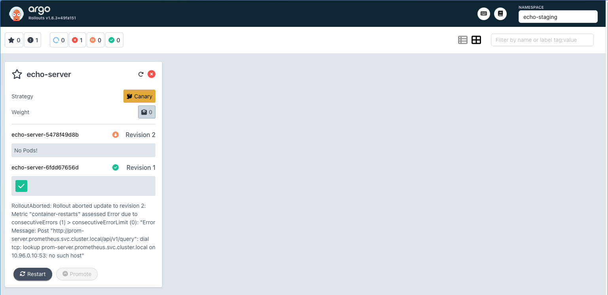
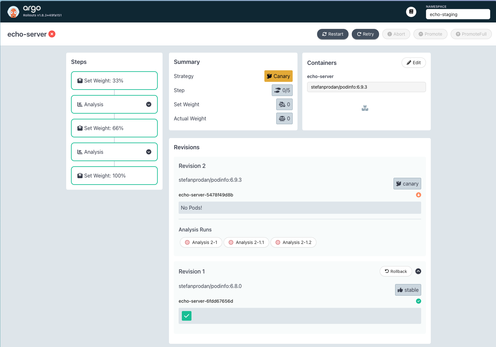
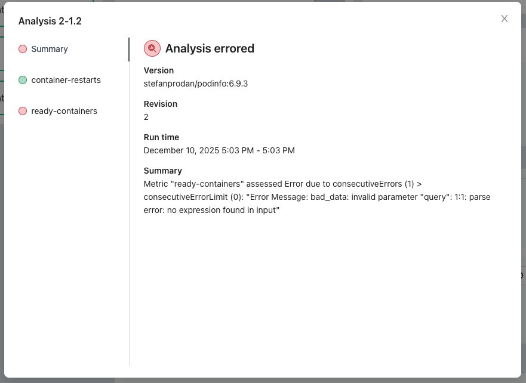
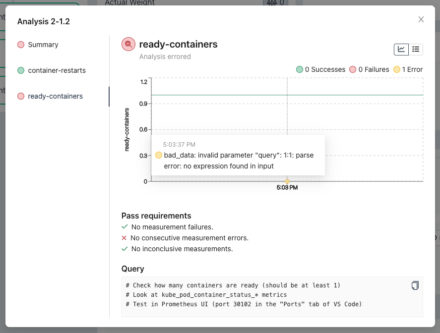
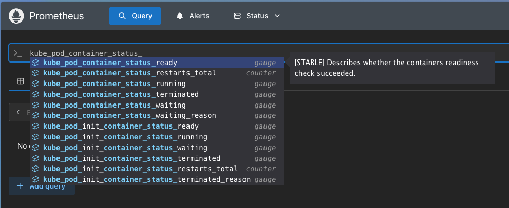

🟡 Intermediate Solution Walkthrough: The Silent Canary#
In this walkthrough, we'll approach the challenge exactly as you would: start with the objectives, break them down one by one, and systematically fix what's broken. 🚀
⚠️ Spoiler Alert: This walkthrough contains the full solution to the challenge. We encourage you to try solving it on your own first. Consider coming back here only if you get stuck or want to check your approach.
📋 Step 1: Review the Challenge Objectives#
Let's start by reading what we need to achieve. The challenge states:
By the end of this level, you should have:
- Pod info version 6.9.3 deployed successfully in both staging and production environments
- Rollouts automatically progress through canary stages based on health metrics
- Two working PromQL queries in the AnalysisTemplate that validate application health during releases
- All rollouts complete successfully
Perfect! Now we have four clear objectives to work toward. Let's tackle them one by one.
🔍 Step 2: Understand the Setup#
Before we start fixing things, let's understand what we're working with. All files are located in the following path:
adventures/01-echoes-lost-in-orbit/intermediate/manifests
Let's see what it contains:
appset.yaml: An Argo CD ApplicationSet that generates Applications for staging and prod using the Git directory generatorbase/: The base configuration for the echo-server app which is deployed using Kustomizeanalysis-template.yaml: An Argo Rollouts AnalysisTemplate that defines health checks during canary deploymentsrollout.yaml: An Argo Rollouts Rollout resource that manages the canary deployment strategyservice.yaml: A Kubernetes Service that exposes the echo-server appkustomization.yaml: Kustomize configuration file for the base
overlays/: Environment-specific overlays for staging and prodkustomization.yaml: Kustomize configuration that adjust the number of replicas for each overlay
Now let's work through each objective.
🎯 Step 3: Clear Objectives#
Note: All steps in this guide use the staging environment. Since staging and production are identical (except for the number of replicas), you can follow the same steps for both. To keep things simple, we'll only mention staging throughout.
Objective 1: Pod info version 6.9.3 deployed successfully in both staging and production environments#
Let's start by checking which version of the podinfo image is currently running in staging:
kubectl -n echo-staging get rollout echo-server -o yaml
Let's look for the spec.template.spec.containers[0].image field. It should be set to stefanprodan/podinfo:6.9.3. Perfect, that's the version we want. However, if we scroll down to the status section, we'll notice an error:
- message: 'Rollout aborted update to revision 2: Metric "container-restarts" assessed
Error due to consecutiveErrors (1) > consecutiveErrorLimit (0): "Error Message:
Post "http://prom-server.prometheus.svc.cluster.local/api/v1/query": dial tcp:
lookup prom-server.prometheus.svc.cluster.local on 10.96.0.10:53: no such host"'
reason: RolloutAborted
status: "False"
type: Progressing
Let's find out which version is actually running. The rollout status includes a field called status.stableRS, which tells us the unique identifier of the replicaset that is currently considered stable (i.e., the one serving traffic). To understand what is actually running in our cluster, we can inspect this replicaset directly:
# status.stableRS: 6fdd67656d
kubectl -n echo-staging get replicaset echo-server-6fdd67656d -o yaml
Let's look for the spec.template.spec.containers[0].image field in the output. In this case, we see:
spec:
template:
spec:
containers:
- name: echo-server
image: stefanprodan/podinfo:6.8.0
This tells us that the old image (6.8.0) is still running, even though we expect 6.9.3. This means that the rollout is stuck and hasn't progressed to the new version.
If we open the Argo Rollouts UI and select the echo-staging namespace in the top right corner, we'll see an error in the rollout—this matches the output from the previous command.

How to fix?#
We don't need to push image 6.9.3 because that has already been done. The problem is that the rollout is aborted due to an error. Let's move on to the next objective to investigate further.
Key Takeaways#
- Argo Rollouts won't progress a rollout if there are errors in the configuration.
- Check the rollout status and conditions for errors when rollouts don't progress.
Further Reading#
Objective 2: Rollouts automatically progress through canary stages based on health metrics#
As described in the previous objective, our rollout is currently not progressing due to an error. Let's investigate exactly what's going on.
How to fix?#
First, let's take a closer look at the error message by running:
kubectl -n echo-staging get rollout echo-server -o yaml
In the output, we see this condition:
- message: 'Rollout aborted update to revision 2: Metric "container-restarts" assessed
Error due to consecutiveErrors (1) > consecutiveErrorLimit (0): "Error Message:
Post "http://prom-server.prometheus.svc.cluster.local/api/v1/query": dial tcp:
lookup prom-server.prometheus.svc.cluster.local on 10.96.0.10:53: no such host"'
reason: RolloutAborted
status: "False"
type: Progressing
This tells us that the container-restarts metric is failing because it can't reach the Prometheus server. This is likely due to an incorrect URL in our AnalysisTemplate.
Let's check the AnalysisTemplate by running:
kubectl -n echo-staging get analysistemplate echo-analysis -o yaml
Or, we can simply look at the file in the repo at adventures/01-echoes-lost-in-orbit/intermediate/manifests/base/analysis-template.yaml.
We see that the spec contains two metrics: container-restarts and ready-containers.
spec:
args:
- name: namespace
metrics:
- consecutiveErrorLimit: 0
count: 1
failureLimit: 0
inconclusiveLimit: 0
name: container-restarts
provider:
prometheus:
address: http://prom-server.prometheus.svc.cluster.local
query: |
# There should be no restarts
sum(increase(kube_pod_container_status_restarts_total{
namespace="{{args.namespace}}",
pod=~"echo-server-.*"
}[1m])) or vector(0)
successCondition: result[0] > 0
- consecutiveErrorLimit: 0
count: 1
failureLimit: 0
inconclusiveLimit: 0
name: ready-containers
provider:
prometheus:
address: http://prometheus-server.prometheus.svc.cluster.local
query: |-
# Check how many containers are ready (should be at least 1)
# Look at kube_pod_container_status_* metrics
# Test in Prometheus UI (port 30102 in the "Ports" tab of VS Code)
successCondition: result[0] >= 1
According to the error message, the problem is with the container-restarts metric: it can't reach the Prometheus server at http://prom-server.prometheus.svc.cluster.local.
Let's check if this service exists. The URL follows the structure http://<service-name>.<namespace>.svc.cluster.local, so we run:
kubectl -n prometheus get service
This outputs one service called prometheus-server, not prom-server. It looks like there's a typo in our manifest. Let's fix it by changing prom-server to prometheus-server in adventures/01-echoes-lost-in-orbit/intermediate/manifests/base/analysis-template.yaml.
After making the change, let's commit and push. For more details, see the challenge instructions.
Now, let's retry the rollout:
kubectl argo rollouts retry rollout echo-server -n echo-staging
This time, instead of using plain kubectl, let's use the Argo Rollouts kubectl plugin for more detailed status:
kubectl argo rollouts -n echo-staging status echo-server
We see that the rollout is still not progressing:
Degraded - RolloutAborted: Rollout aborted update to revision 2: Metric "container-restarts" assessed Failed due to failed (1) > failureLimit (0)
Error: The rollout is in a degraded state with message: RolloutAborted: Rollout aborted update to revision 2: Metric "container-restarts" assessed Failed due to failed (1) > failureLimit (0)
At least now we have a new error! The container-restarts metric is failing because there was one failure, but the failure limit for the rollout to proceed is set to 0.
Let's look at the current configuration:
- name: container-restarts
successCondition: result[0] > 0
failureLimit: 0
inconclusiveLimit: 0
consecutiveErrorLimit: 0
count: 1
provider:
prometheus:
address: http://prometheus-server.prometheus.svc.cluster.local
query: |
# There should be no restarts
sum(increase(kube_pod_container_status_restarts_total{
namespace="{{args.namespace}}",
pod=~"echo-server-.*"
}[1m])) or vector(0)
The query checks for the number of container restarts in the last minute. If there are no restarts, the query returns 0. As the comment says, there should be no container restarts for success.
But the success condition is set to result[0] > 0, which means the metric only succeeds if there is at least one restart. That's the opposite of what we want! Let's change the success condition to result[0] == 0.
After updating, commit and push your changes, then retry the rollout:
kubectl argo rollouts retry rollout echo-server -n echo-staging
This time, let's use the Argo Rollouts UI to check the status. Open the UI, select the echo-staging namespace in the top right, and click on the rollout card.
After waiting a bit, we see the rollout still hasn't progressed and there are three analysis runs:

Clicking on Analysis 2-1 shows the first error (wrong service), Analysis 2-1.1 shows the previous error (wrong success condition), and Analysis 2-1.2 is the latest error. Let's take a closer look:

Here, we see that the container-restarts metric was finally successful, but ready-containers is still failing. Let's click the metric on the left to investigate the query. It turns out it simply wasn't implemented yet:

Let's follow the comment and open the Prometheus UI to find a metric that helps us check the number of ready containers. By entering kube_pod_container_status_, autocompletion shows all available metrics. Let's choose kube_pod_container_status_ready.

Just like with the container-restarts metric, we want to filter for our namespace and pod. Let's add this and execute the query:
kube_pod_container_status_ready{
namespace="echo-staging",
pod=~"echo-server-.*"
}
This returns all ready containers for our pods:

But we don't want a list of all ready containers—we want to check if there is at least one ready container. So, let's use the sum aggregator:
sum(
kube_pod_container_status_ready{
namespace="echo-staging",
pod=~"echo-server-.*"
}
)

Nice! Now the query returns "1" instead of a list, which is exactly what we want.
Before adding this to our manifest, let's remember we have two environments. Instead of hardcoding the namespace, let's use the same approach as in the other metric and use the {{args.namespace}} placeholder.
The final query looks like this (with or vector(0) at the end to ensure the query returns 0 if no data is found):
query: |-
# Check how many containers are ready (should be at least 1)
sum(kube_pod_container_status_ready{
namespace="{{args.namespace}}",
pod=~"echo-server-.*"
}) or vector(0)
Let's add this to our manifest, commit, push, refresh, and retry again.
Yay! This time, the rollout actually progressed and the analysis runs are successful—objective met! 🎉
Key Takeaways#
- There are multiple effective ways to debug Argo Rollouts. Try them and use your favorite.
- Service references use the format
svc.namespace.svc.cluster.local. - Prometheus queries are a simple and effective way to validate application health during rollouts.
- The Prometheus UI is a great way to test and build your queries.
Further Reading#
Objective 3: Two working PromQL queries in the AnalysisTemplate that validate application health during releases#
This objective is closely tied to Objective 2. By fixing both metrics in the AnalysisTemplate (container-restarts and ready-containers) we ensured that application health is properly validated during each rollout. Both queries now work as intended:
container-restarts: Confirms there are no container restarts during the rollout.ready-containers: Checks that at least one container is ready before progressing.
With these working PromQL queries, our rollouts are now protected by robust health checks. 🎉
Key Takeaways#
- PromQL queries in the AnalysisTemplate provide automated, reliable health validation for deployments.
Objective 4: All rollouts complete successfully#
This objective is also directly connected to Objective 2 and 3. After correcting the metrics in the AnalysisTemplate, the rollout was able to progress through all canary stages and complete successfully in both environments.
With all objectives met, our deployment process is now fully automated and resilient!
✅ Complete Solution#
Here's what your corrected AnalysisTemplate should look like with all fixes applied:
apiVersion: argoproj.io/v1alpha1
kind: AnalysisTemplate
metadata:
name: echo-analysis
spec:
args:
- name: namespace
metrics:
- name: container-restarts
successCondition: result[0] == 0
failureLimit: 0
inconclusiveLimit: 0
consecutiveErrorLimit: 0
count: 1
provider:
prometheus:
address: http://prometheus-server.prometheus.svc.cluster.local
query: |
# There should be no restarts
sum(increase(kube_pod_container_status_restarts_total{
namespace="{{args.namespace}}",
pod=~"echo-server-.*"
}[1m])) or vector(0)
- name: ready-containers
successCondition: result[0] >= 1
failureLimit: 0
inconclusiveLimit: 0
consecutiveErrorLimit: 0
count: 1
provider:
prometheus:
address: http://prometheus-server.prometheus.svc.cluster.local
query: |-
# Check how many containers are ready (should be at least 1)
sum(kube_pod_container_status_ready{
namespace="{{args.namespace}}",
pod=~"echo-server-.*"
}) or vector(0)
With these changes, your rollouts will now progress automatically through canary stages based on health metrics, and all objectives of the challenge will be met. Great job! 🎉